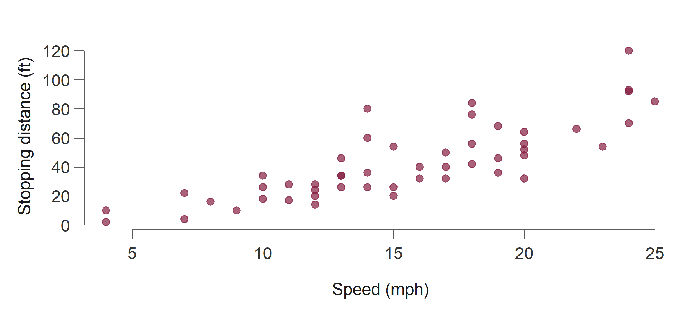
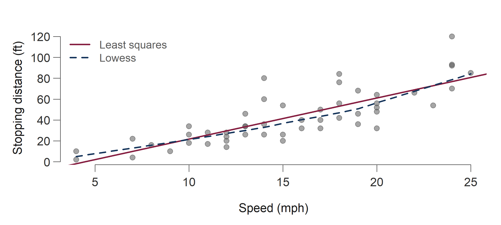
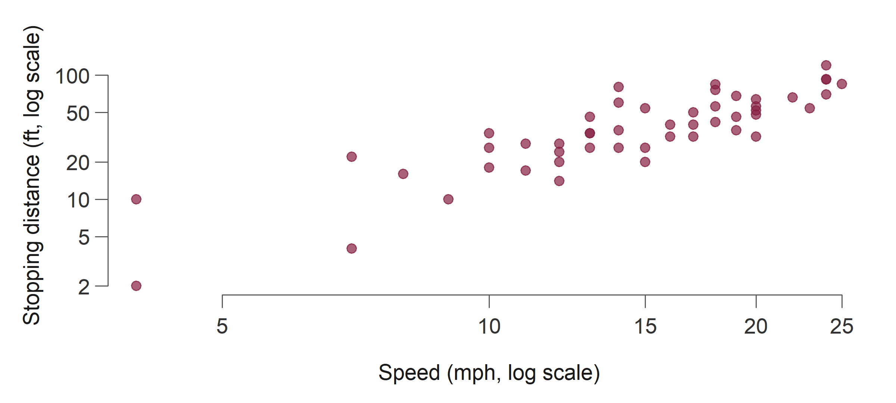
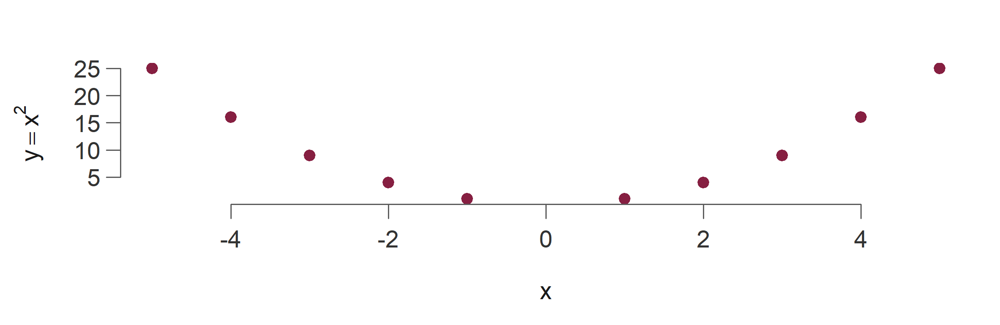
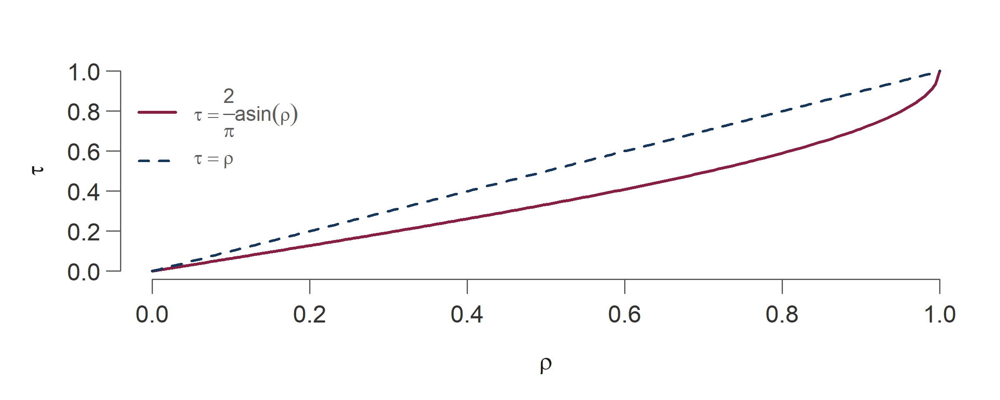
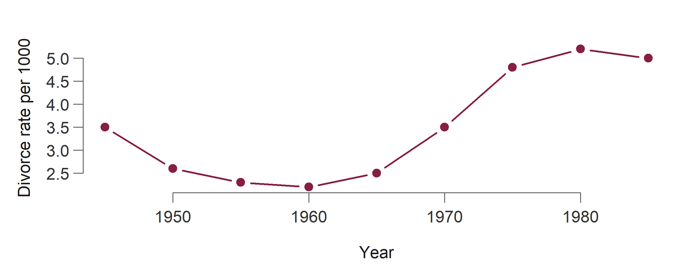

Nonparametric Tests for Associations
Spearman’s \(r_s\), Kendall’s \(\tau\), and tests for trend
Virginia Tech
15 October 2026
\[ \newcommand{\Var}{\operatorname{Var}} \newcommand{\E}{\mathbb{E}} \newcommand{\NormRV}{\mathcal{N}} \newcommand{\Nor}{\mathcal{N}} \newcommand{\sgn}{\operatorname{sgn}} \]
Outline
Two nonparametric measures of association between a pair of continuous variables:
- Spearman’s rank correlation, \(r_s\)
- Kendall’s tau, \(\tau\)
We will build each one up from the parametric baseline (Pearson’s \(r\)), work a small example by hand, and then reproduce it in R.
At the end: using both statistics to test for a trend in time-ordered data.
Pearson’s correlation
Pearson’s correlation coefficient
The cars data set: stopping distance against speed for 50 cars.
\[ r = \frac{\sum_{i=1}^n (X_i - \bar X)(Y_i - \bar Y)} {\sqrt{\sum (X_i - \bar X)^2 \sum (Y_i - \bar Y)^2}} \]
Scatter plot

The relationship is clearly increasing: a positive association.
Adding a fit

Correlation in R
cor.test(cars$speed, cars$dist)
#>
#> Pearson's product-moment correlation
#>
#> data: cars$speed and cars$dist
#> t = 9.464, df = 48, p-value = 1.49e-12
#> alternative hypothesis: true correlation is not equal to 0
#> 95 percent confidence interval:
#> 0.6816422 0.8862036
#> sample estimates:
#> cor
#> 0.8068949Log transform?

Does the correlation improve?
Pearson’s \(r\) is not invariant to a monotone transformation : the number moved from \(0.807\) to \(0.856\) even though no car changed its ranking.
Three things to remember
- \(X \perp Y \Rightarrow \rho_{X,Y}=0\), but not the converse : unless \(X, Y\) are jointly normal.
- Correlation \(\not\Rightarrow\) causation. There may be a lurking variable creating a spurious relationship.
- Plenty of entertaining examples at Spurious Correlations.
Zero correlation, perfect dependence
Here \(\rho_{X,Y}=0\) exactly, yet \(Y = X^2\): dependent, but not linearly so.

Spearman’s rank correlation
Motivation
Pearson’s \(r\) measures only the linear part of a relationship.
\(y = x^4\) is a perfect increasing function of \(x\).
Spearman’s correlation is 1, but Pearson is less than 1.
Definition
- Spearman’s \(r_s\) is Pearson’s correlation applied to the ranks of the \(X_i\) and the \(Y_i\).
- It measures the degree of monotone relationship. With no ties, \(r_s = 1\) (or \(-1\)) means one variable is a perfect monotone increasing (or decreasing) function of the other.
- \(r_s\) does not change when the same monotone function is applied to both samples : the ranks do not change. It cares about relative magnitudes, not absolute ones.
- For ties, use midranks within \(X_i\) (or within \(Y_i\)). Ties across samples do not matter.
Transformation invariance in R
All three agree, because \(\log\) and \(x^2\) (on positive data) are monotone.
Large-sample approximation
For large \(n\), under \(H_0\) of independence:
\[ \Var(r_s) = \frac{1}{n-1}, \qquad Z = \frac{r_s}{\sqrt{\Var(r_s)}} = \sqrt{n-1}\; r_s \;\sim\; \NormRV(0,1) \]
There is disagreement in the literature about the accuracy of this for moderate \(n\). Some authors prefer
\[ t = \frac{r_s\sqrt{n-2}}{\sqrt{1-r_s^2}} \;\sim\; t_{(n-2)} \]
which is claimed to be more accurate for moderate \(n\).1
Simplifying \(r_s\)
Let \(R_i = \operatorname{rank}(X_i)\) and \(S_i = \operatorname{rank}(Y_i)\), so
\[ r_s = \frac{\sum_{i=1}^{n}(R_i-\bar R)(S_i-\bar S)} {\sqrt{\sum (R_i-\bar R)^2 \sum (S_i-\bar S)^2}} \]
Since the ranks are a permutation of \(\{1,2,\dots,n\}\):
\[ \begin{aligned} \sum_{i=1}^{n} R_i &= \sum_{i=1}^{n} S_i = \sum_{i=1}^{n} i = \frac{n(n+1)}{2} \Rightarrow\; \bar R = \bar S = \frac{n+1}{2} \\[1ex] \sum (R_i-\bar R)^2 &= \sum (S_i-\bar S)^2 = \sum_{i=1}^{n}\Bigl(i-\tfrac{n+1}{2}\Bigr)^{2} = \frac{n(n^{2}-1)}{12} \end{aligned} \]
Simplifying \(r_s\) (contd.)
Substituting the constants:
\[ \begin{aligned} r_s &= \frac{12\sum_{i=1}^{n}(R_i-\bar R)(S_i-\bar S)}{n(n^{2}-1)} \\[1ex] &= \frac{12\bigl[\sum_{i=1}^{n}R_i S_i - \tfrac{n(n^{2}+1)}{4}\bigr]}{n(n^{2}-1)} \\[1ex] &= \frac{12\sum_{i=1}^{n}R_i S_i}{n(n^{2}-1)} - \frac{3(n+1)}{n-1} \end{aligned} \]
- This is a simpler formula where you need to calculate just \(\sum_{i=1}^{n}R_i S_i\) from the observed data and know the sample size \(n\).
The working formula
There is an even simpler looking formula in terms of the differences.
Let the rank differences be \(D_i = R_i - S_i\):
\[ \boxed{\;r_s = 1 - \frac{6\sum_{i=1}^{n} D_i^{2}}{n(n^{2}-1)}\;} \]
Let’s do an example.
Example: nine teas
Two judges ranked nine teas on taste and full-bodied properties, with 1 the highest ranking. Calculate the Kendall and Spearman measures of association, test the null hypothesis of independence, and find the appropriate one-tailed \(P\)-value in each case.
| A | B | C | D | E | F | G | H | I | |
|---|---|---|---|---|---|---|---|---|---|
| Judge 1 | 1 | 5 | 9 | 7 | 4 | 6 | 8 | 2 | 3 |
| Judge 2 | 4 | 3 | 6 | 8 | 2 | 7 | 9 | 1 | 5 |
Solution: Spearman
| Tea | Judge 1 | Judge 2 | \(D\) | \(D^2\) |
|---|---|---|---|---|
| A | 1 | 4 | -3 | 9 |
| H | 2 | 1 | 1 | 1 |
| I | 3 | 5 | -2 | 4 |
| E | 4 | 2 | 2 | 4 |
| B | 5 | 3 | 2 | 4 |
| F | 6 | 7 | -1 | 1 |
| D | 7 | 8 | -1 | 1 |
| G | 8 | 9 | -1 | 1 |
| C | 9 | 6 | 3 | 9 |
\[ r_s = 1 - \frac{6\sum D_i^{2}}{n(n^{2}-1)} = 1 - \frac{6 \times 34}{9\,(9^{2}-1)} = 0.7167 \]
Testing Spearman’s \(r_s\)
- Z-test: \(\;Z = \sqrt{n-1}\,r_s \sim \NormRV(0,1)\)
- t-test: \(\;t = \dfrac{r_s\sqrt{n-2}}{\sqrt{1-r_s^2}} \sim t_{(n-2)}\)
Using the Z-test with \(n = 9\):
\[ Z = \sqrt{8}\times 0.7167 = 2.0268, \qquad P(Z \ge 2.0268) = 0.0213 \]
One-sided \(P\)-value against \(H_1:\rho>0\) is \(0.0213\) : reject \(H_0\).
The same test in R
CLT by hand: the Z-test
Let’s apply the CLT calculation for Spearman’s \(r_s\) for the cars dataset.
First the Z-test with Normal approximation.
- Z-test: \(\;Z = \sqrt{n-1}\,r_s \sim \NormRV(0,1)\)
The Z-score is large: 5.8124979 which leads to a very small p-value 6.1547467^{-9}. We would reject the null hypothesis in favour of a strong positive monotone relationship.
CLT by hand: the t-test
Same dataset, but we apply CLT with the Student’s t distribution approximation.
- t-test: \(\;t = \dfrac{r_s\sqrt{n-2}}{\sqrt{1-r_s^2}} \sim t_{(n-2)}\)
The t test statistics is large: 10.3240316 which leads to a very small p-value 6.1547467^{-9}. We would, again, reject the null hypothesis in favour of a strong positive monotone relationship.
Both reject decisively here; the two approximations disagree only in the far tail, this is where a moderate sample size \(n\) matters.
Kendall’s tau
Concordance and discordance
Kendall’s \(\tau\) is built from the probability of concordance \(p_c\) and of discordance \(p_d\):
\[ p_c = P\bigl[(X_i-X_j)(Y_i-Y_j) > 0\bigr], \qquad p_d = P\bigl[(X_i-X_j)(Y_i-Y_j) < 0\bigr] \]
\[ \tau = p_c - p_d = 2p_c - 1 = 1 - 2p_d \quad [\text{no ties}] \]
Reading \(\tau\)
| Association | \(p_c\) vs \(p_d\) | \(\tau\) |
|---|---|---|
| Positive | high \(p_c\), low \(p_d\) | near \(+1\) |
| Negative | high \(p_d\), low \(p_c\) | near \(-1\) |
| Zero | \(p_c \approx p_d\) | near \(0\) |
Estimated from data by
\[ \hat\tau = \frac{\#\{\text{concordant pairs}\} - \#\{\text{discordant pairs}\}}{\binom{n}{2}} \]
Relation to Pearson’s \(\rho\)
For a bivariate normal pair, \(\;\tau = \dfrac{2}{\pi}\arcsin(\rho)\).

Computing \(\hat\tau\) by hand
Equivalent recipe when there are no ties:
- Order the pairs \((X_i, Y_i)\) so the \(X\)’s increase: \(X_1 < X_2 < \dots < X_n\).
- Count the pairs \((Y_i, Y_j)\), \(j>i\), with \(Y_i < Y_j\). If \(Y_i = Y_j\), add \(1/2\).
- Then \[\hat\tau = \frac{2 \times (\text{sum in step 2})}{\binom{n}{2}} - 1\]
Large-sample approximation for \(\hat\tau\)
Under \(H_0\) of zero association, \(\hat\tau\) is approximately normal with
\[ \E(\hat\tau) = 0, \qquad \Var(\hat\tau) = \frac{4n+10}{9n(n-1)} \]
so that
\[ Z = \frac{3\sqrt{n(n-1)}\; T}{\sqrt{2(2n+5)}} \;\sim\; \NormRV(0,1) \]
You do not need to memorise this : you do need to know what the test is.
Back to the teas
| A | H | I | E | B | F | D | G | C | |
|---|---|---|---|---|---|---|---|---|---|
| Judge 1 | 1 | 2 | 3 | 4 | 5 | 6 | 7 | 8 | 9 |
| Judge 2 | 4 | 1 | 5 | 2 | 3 | 7 | 8 | 9 | 6 |
The original order is in the tea-ratings table above. Now apply–3 to the sorted row of Judge 2.
Solution: Kendall
The last row counts how many times \(Y_i < Y_j\) for all \(j > i\).
| A | H | I | E | B | F | D | G | C | |
|---|---|---|---|---|---|---|---|---|---|
| Judge 1 | 1 | 2 | 3 | 4 | 5 | 6 | 7 | 8 | 9 |
| Judge 2 | 4 | 1 | 5 | 2 | 3 | 7 | 8 | 9 | 6 |
| Count \(Y_i < Y_j\) | 5 | 7 | 4 | 5 | 4 | 2 | 1 | 0 | – |
\[ \hat\tau = \frac{2 \times 28}{\binom{9}{2}} - 1 = 0.5556 \]
Checking against R
cor(tea$Judge_1, tea$Judge_2, method = "kendall")
#> [1] 0.5555556
cor.test(tea$Judge_1, tea$Judge_2, method = "kendall",
alternative = "greater")
#>
#> Kendall's rank correlation tau
#>
#> data: tea$Judge_1 and tea$Judge_2
#> T = 28, p-value = 0.02231
#> alternative hypothesis: true tau is greater than 0
#> sample estimates:
#> tau
#> 0.5555556Ties need care
- Ties need special treatment in all nonparametric procedures, but in Kendall’s \(\tau\) the problem is subtler.
- Ties within a sample (\(X_i = X_j\) or \(Y_i = Y_j\)): ignore them, or add \(1/2\) as above.
- Ties in both (\(X_i = X_j\) and \(Y_i = Y_j\)): neither fix works. Can anyone guess why?
There are no longer \(\binom{n}{2}\) distinguishable pairs to check for concordance, so \(\hat\tau\) computed the ordinary way cannot reach 1 even under perfect agreement.
The Goodman–Kruskal \(\gamma\)
Many fixes exist; the simplest is to change the measure. The only way to define a tau coefficient that always equals one under perfect agreement or disagreement is
\[ \gamma = \frac{C - Q}{C + Q} \]
the number of concordant untied pairs minus the number of discordant untied pairs, divided by the total number of untied pairs : the Goodman–Kruskal gamma coefficient.
\(\tau\) is also transformation invariant
Tests for trend
From association to trend
So far, we have talked about association. The next question is how do we look for a trend?
- Treat time as the \(X\) variable and the time-ordered observations as the \(Y\) variable.
- An association between \(X\) and \(Y\) is then evidence of a trend.
- The degree of concordance between such \(X\) and \(Y\) becomes a measure of trend, so Kendall’s \(\tau\) can test whether that trend is significant.
- A more formal approach is covered in a time series course.
The key idea
A hypothesis of randomness in a single set of \(n\) time-ordered observations is the same as a hypothesis of independence between those observations and the numbers \(1, 2, \ldots, n\).
Taking \(x_i = i\), the statistic becomes
\[ T = \frac{\sum\sum_{1 \le i < j \le n} \sgn(Y_j - Y_i)}{\binom{n}{2}} \]
: the usual Kendall’s \(\tau\) with a cleaner formula.
Reject for large positive \(T\) against an upward trend, large negative \(T\) against a downward one. This use of \(T\) is the Mann test.
Example: US divorce rates
| 1945 | 1950 | 1955 | 1960 | 1965 | 1970 | 1975 | 1980 | 1985 |
|---|---|---|---|---|---|---|---|---|
| 3.5 | 2.6 | 2.3 | 2.2 | 2.5 | 3.5 | 4.8 | 5.2 | 5 |
Do these data show a positive trend?
Plot the series

The series dips and then rises : not monotone. What will \(\tau\) say?
The Mann test in R
Daniels’ test
As with Kendall’s \(\tau\), Spearman’s \(r_s\) can be treated as a measure of trend in a single sequence of time-ordered observations, and used to test \(H_0\) of no trend. That application is Daniels’ test.
cor.test(divorce$Year, divorce$Rate, method = "spearman",
alternative = "greater", exact = FALSE)
#>
#> Spearman's rank correlation rho
#>
#> data: divorce$Year and divorce$Rate
#> S = 40.669, p-value = 0.02626
#> alternative hypothesis: true rho is greater than 0
#> sample estimates:
#> rho
#> 0.6610937Comparing all methods
All three are positive but modest : the early decline cancels part of the later rise.
A trend test answers “is it monotone?”, not “did it change?”.
Resources
Full R companion for these slides:
http://dattahub.github.io/nonparametric/association_demo.html
Reference: Gibbons & Chakraborti, Nonparametric Statistical Inference, chapters on measures of association and tests for trend.